人压抑到极点，只想大哭一场——一个武汉市民的生活日记
原文链接 备份链接 前言 2003年的非典，我在武汉读书，每天两点一线地简单生活，虽然也看看新闻报道，但那时的网络并不发达，信息量很少，武汉感染的人也很少，所以真的没有什么感觉。 2020年的肺炎疫情，爆发在我生活了将近20年的武汉——这 …
开启更有意思的武汉！请点击上方优良better →点击右上角“…” → “设为星标 ”
截至今日，新冠肺炎全国确诊人数超过三万人，死亡723人，数字远远超过2003年的非典。疫情发生在春节，在这个对中国人而言意义深重的节日里，疫情带来的是分别、焦灼和泪水。
持续上升的数据让人对数字开始麻木。相较于数字，我会更担心去年秋天感冒的奶奶是否健康安全，听见母亲说头疼心慌到立马下楼买药，付款时看着支付宝里的余额一阵叹气，电梯里即使相隔一层口罩，我也害怕有病毒会钻进来。
这是被困在宜昌家中的我的日常。但还有一些人，至今滞留在海外他乡，焦灼地等待着那一架神圣的飞机。
今天是元宵节，这个本应阖家团聚的日子，对滞留在海外的武汉人来说，只是又一个茫然等待、手足无措的普通一天。在他们看来，回家的路从未如此曲折漫长，回家的愿望也从未如此强烈。
以下，我记录了五个滞留在境外十多天的武汉人的经历。
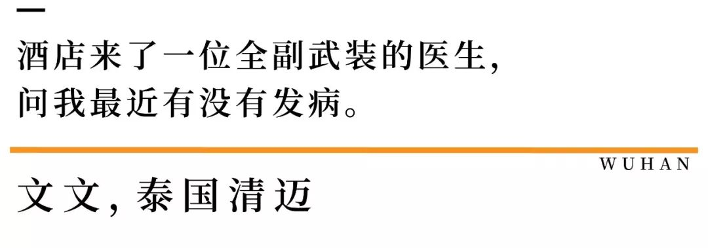
我是个不做旅行计划的人，年末了，就想找个地方好好休息，看看书睡睡觉。我1月21抵达清迈，结果到达没两天，武汉封城了。
原想大年三十下午回家，陪母亲吃饭，形势所逼，我只得从清迈辗转曼谷，只有那里有回国的包机。
我在到达清迈三天后就开始考虑两个事情，住哪里？买口罩！不管去哪里每天都要去药店买几包口罩，我意识到应该多买。店员说不会再进货了，于是我买走了剩下的三包口罩，折合人民币1000元。
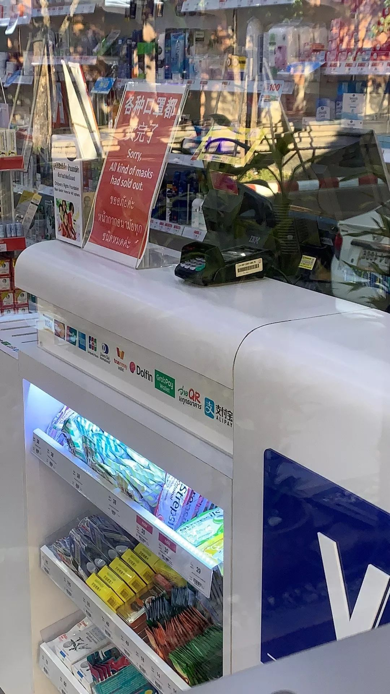
25号上午，我正在休息，拒绝了酒店阿姨打扫卫生，她以为我不舒服，就告诉了大堂经理，大约两个小时后，来了一位全副武装的医生要求检查，问我最近有没有发病、服药，他问得很耐心很细致，这是一种负责任的行为，我完全可以理解。
武汉封城后，我收到返程航班取消的邮件，因为箱子里带的都是夏天的衣服，于是我想到去海南三亚，从那里再回位于海口的另一个家。
那天中午，海口出台了拒绝湖北人入境的文件。住的酒店马上到期，我迅速打开飞猪、去哪儿寻找住处，一些民宿老板见我是武汉号码直接拒绝，而他们，几乎都是国人。
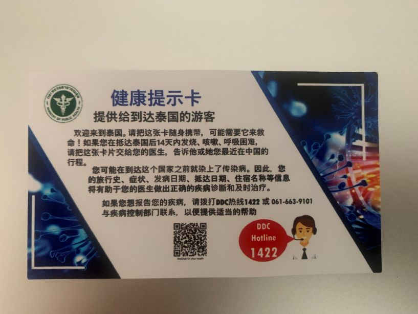
于是，我打开booking，开始寻找国外的房东，很快就找到了现在住的房子。
到底回不回去，我挣扎了很久，不害怕是不可能的，万一回去遇到什么状况，破坏掉目前的平衡怎么办？在做决定那天，我一晚上都没睡着。

我是81年的，亲身经历了九八年抗洪，非典时期被隔离在学校，这些记忆很深刻，但都没有这次这么特殊。出现了困难，找到一些组织大家更要团队协作去解决，然而很多人只在诽谤质疑，我很纳闷为什么对别人没有基本的信任呢？
我真的感受到独立生存、过滤信息、主动寻求帮助是多么重要的能力，而我们的教育，似乎忘记了教大家怎么生活。
23号我和老公到达巴黎，一出机场就被一些媒体围上来问，“你们为什么要来法国？”那一刻说实话我很生气，而后的经历让我的心情更加复杂。
因为疫情升级，29号返程航班取消，联系机场，客服电话一直打不通。通过线上我联系到了法航，说可以改签到2月6日，没过多久又通知整个2月都没有航班。接着，我每天给大使馆外交官打电话，想寻求解决办法，得到的回应是“这都是意料之中的事，你不用每天来问，我们也没有接到消息，关注网站就行了。”
第三天开始对方显得不耐烦，也没有登记我们的信息。
当我得知可以包机回国时，我再一次打给英国大使馆，对方说英国会安排，愿意等可以等，但他们不保证，建议尽快自行回国。当天，全国各地的机场依旧联系不到人。
我每天接收到的信息都是不确定、不知道、别问我。每天都在操心明天住哪里？什么时候能回去？我该联系谁？
后来，我和老公达成一致——谁都不要问了，自己处理。
一个在日本的同学给了我一份回国攻略，29号我们抢到了从巴黎到上海的票，然后买了从上海到长沙的票，经停武汉，这是最好的路线。安排妥当之后，我们才稍微放松一些，在巴黎玩了两天。

清场的卢浮宫，为了大家安全，我俩决定6点出门逛景点
但很快，刚刚平复的心情又受到了来自现实的暴击。
2月3号回国那天，登机时空姐了解到我们来自武汉，为了不引起大家恐慌，检测体温后把我们安排在最后一排，在那之前的三排座椅都被撤掉，给我们单独拿了纸巾，厕所也是单独使用，并告诉我们之后可能不会有服务。
这时候上来一家五口人，其中一位大妈问后面为什么不能坐，空姐解释完后他们全家的情绪就爆炸了，开始质问谩骂工作人员，要求下飞机。这样僵持了一个小时，乘务长不敢做决定，打电话给总部，回答是不想飞的人员自行下机，帮助改签，那一家五口才离开。
乘务长走过来，给我俩安排了餐食，把座位换到了靠窗的位置，告诉我们不要害怕，他在非典时期经历过无数这种事，他还说，“肯定会有乘客问，但我不会暴露你们的信息。”坐在前排的一个小女孩儿，拿了一盒巧克力过来安慰我。
小女孩的巧克力
落地上海之后，例行检测没有问题，行李消毒之后，我们被带到东航相应的酒店隔离，时间是两天。
但就在等待行李的那段空白时间，一个中年男人拿着手机，摄像头正对着我俩拍照，边拍边说，“看那俩是武汉的。”
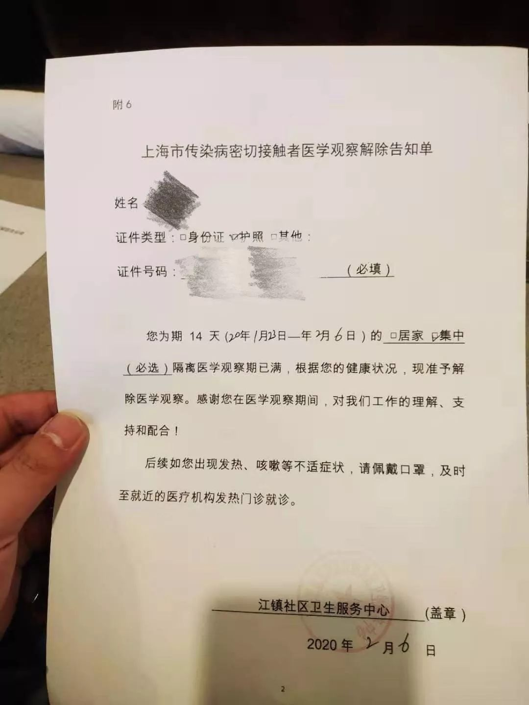
隔离证明
这一切直到今天凌晨才结束，我终于回到了武昌家里，经过三环时外面的样子，就像以往凌晨三四点的武汉。
除夕那天，我和老公在法国一家快餐店吃了一包薯条，那就是我们的年夜饭，好在今天我终于回来了，赶上十五，冰箱里还有汤圆。

我的工作往返在武汉和泰国之间。
因为对曼谷很熟悉，有一些物资渠道，疫情爆发后，在确认家人健康后我主动决定留在这边，一是减少家里负担，二是回去也帮不上忙，也许滞留人员需要我的帮助，在这里做志愿者，我的作用更大。
最近在协助处理曼谷滞留人员包机回国的事情，也常常充当司机和搬运工。
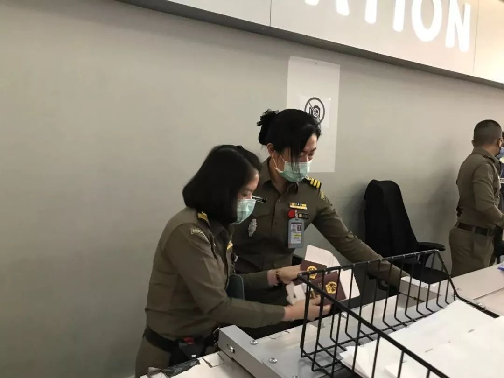
和我一起的是一个河北女生，她一直在泰国工作，是这次工作的组织者。我们有一个三百多人的群，用来收集大家的信息，发布航班动态，我的工作就是制表、反馈、回复，并关注国内国际实时发布的政策。
每日每夜我们都要处理大量重复的信息，三百多人，一人一句话，相同的问题反复在解释，大家情绪都不稳定，甚至还有人在群里造谣，质疑航空公司发国难财，我们作为中间的沟通者，不仅心力交瘁，还承受着很大的心理压力。
现在群里分两类人，一是牵挂家里，在外经济负担重要回家的人，他们大多没有任何信息源，也不会主动去搜索过滤信息，像无头苍蝇一样惶恐，慌乱。另一部分是早就做好打算不回去的人，这些人基本都租好了一个月的民宿别墅，相对淡定。
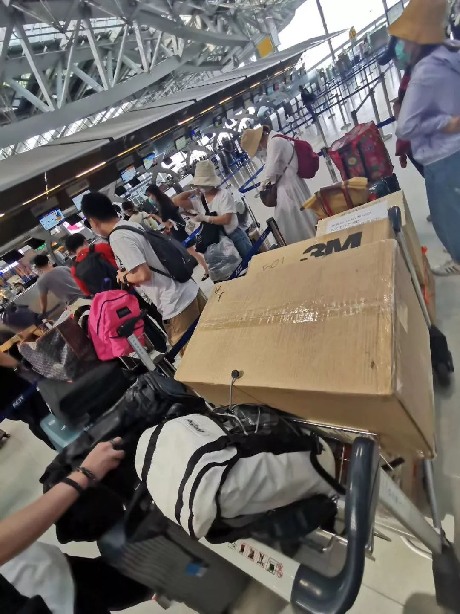
有个女生听说小F捐物资，扔了半箱行李帮他们装东西。
滞留在泰的国人已达上万，有上千是武汉人，所以这就产生另外一个现象，先来的害怕后来的带来病毒，这是一种很微妙的心理。
在这样的突发性灾难下，要接回海外滞留的疫区人员，有一套严格的流程。首先我们要帮大使馆收集有意愿回去的人员信息，提交给外交部批文，调度飞机，然后再确定派遣哪家航空公司，在此之前，还需获得泰汉双方的认可批准。
为了尽可能地降低经济损失，人数大于一百官方才会调度飞机，所以在这种情况下，如果不满100人报名，我们就会面对很多微辞和非议，我只想尽我能力做些事情，却没想到做一件好事竟那么难。
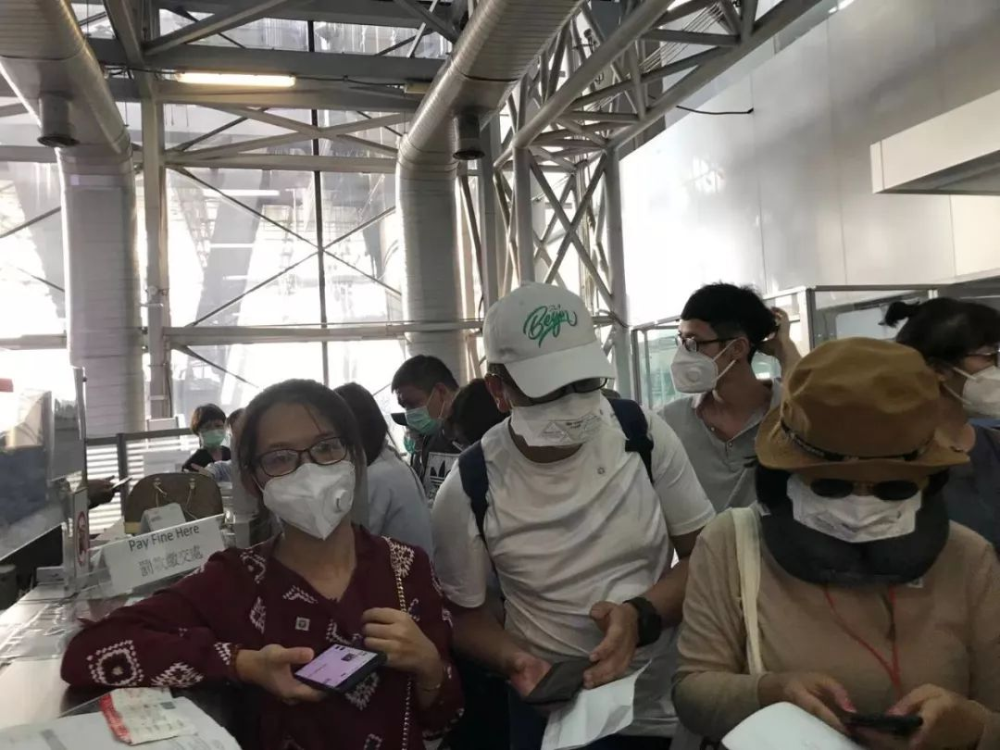
2月7日下午，群内130人搭乘包机安全到达武汉。
因为要跟大量的供应商对接，常常是一会儿有包机和医疗物资，一会儿又没有或者物资不符合要求，我每天的心情都上上下下。而且，还有一点我想告诉大家，千万不要相信微商，他们口中的有大量口罩都是假的，现在情况是量越大越不可能。
很多人也通过群聊加我微信求助，他们非常不安，这些天一边帮助安慰别人，也一边担心自己，未来两个月我将没有收入。等下周工作做完之后，我打算和团队一起商量接下来怎么办。
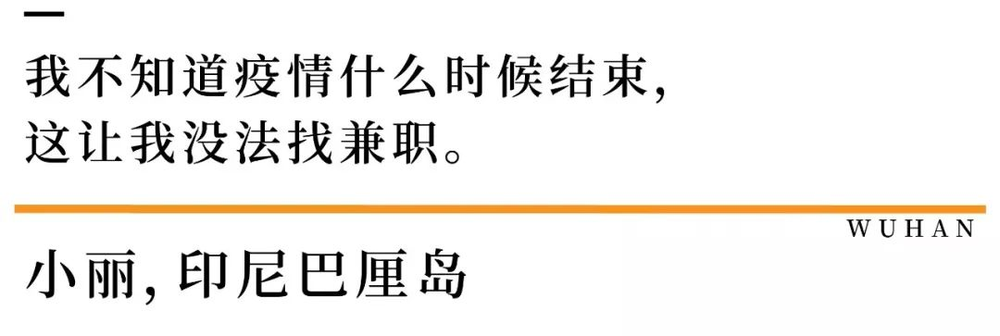
我男朋友是英国人，这次和我们一起出来的还有他的三个朋友。当我们得知3月1号回国的希望都很渺茫，我们还得在外面漂一两个月的时候，我想到的第一件事是我的三只狗怎么办？
1月14号我就把它们送到了宠物店，二十多天过去了，我交了一次费，16天，2900块钱，接下来要再交一个月，这是笔不小的开支。
出来这段时间，我们已经花了3万多人民币，现在每天我会去沙滩上坐坐，不要钱。不购物，不上馆子，吃饭都在街边小摊解决，想喝酒了就去便利店买，然后站在酒吧门口喝。就这样，每天的日常支出控制在200元左右，毕竟现在我没有收入。
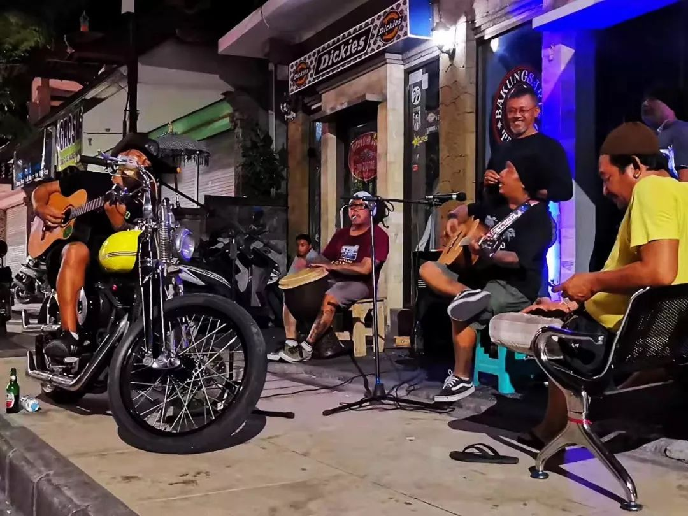
得知我们从中国来，他们说，那为病毒干杯吧。
有家不能回，回国也担心被感染，男朋友提出去他家住一段时间，那里也相对安全，正好我手上也有英国签证，于是我们买了从印尼转阿姆斯特丹，再到伦敦的机票，但他的家人也担心会被感染，所以说实话，我要是有选择我肯定回去。
经济上，我男朋友可以在伦敦打短工，而我却很尴尬，因为我是武汉人，而且我不知道疫情什么时候会结束，这让我没法找兼职，只能在线上找找教英语之类的活儿，没办法也必须创收。

今日漂在海上，向这片海默念：祈求大自然带走这场灾难。
这里面有一种很强烈的逃难的感觉，心里根本没底，还担心到达英国后被遣返，最近几天，我每天都在不停地刷各地的入境政策和官方消息。
后来我去一家店买拖鞋，付款时我出示的卡片上有汉字，店员问我，“武汉人吗？”我下意识摇头说不是。在库塔，路过一家酒馆，门口有乐队，大家围在一起唱歌跳舞，老板问我们是哪里人，我说武汉，他说，“来跟我们一起玩吧，干杯！”这是唯一让我脱离焦虑的时刻。
这两天我去海边散步时，都在重新思考规划今后的生活，特殊的经历改变了我的一些思维方式。

前天我搭乘火车从大阪市区搬到了郊外，为了节省住宿费。算上清洁费、税费，我需要把这笔费用控制在150元人民币以内。
一路上，我没有拿出手机，在公共场合我也是尽力说日语，不想旁人看到屏幕上的中文，内心对我感到恐慌，制造不必要的尴尬和麻烦。我甚至在付钱时，提前数好和金额对应的零钱，这样避免交流，看似简单的动作背后是非常复杂的心理活动，日本人不是向来都不喜欢麻烦别人吗？
这就是流亡的感觉。
我出来大半个月了，每天吃饭都是在便利店和拉面馆解决，600日元一顿，约40元人民币。前两天看到一家店在卖上海炒面，我冲过去就买了一盒。实话说并不好吃，但它是中国味道，距离家最近的东西。
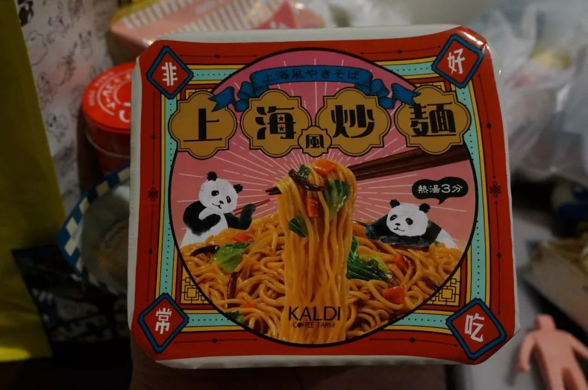
有一次去博物馆看一个展览活动，当主持人问大家都来自哪里时，我几乎紧张地在流汗。我是武汉人这个事实，我说或者不说，都觉得不好，这种感觉前所未有。
昨天刚搬到郊区，路过一条薄薄的小溪，看到一只白鹤，周围是矮矮的平房民居，一切都是安静的，透亮的，焦躁了几天之后，心情一下变得舒缓起来。
在网上看到附近有一家西安人开的店，据说很美味，我打算明天过去，主要是想和老板聊聊天，很想跟人说话，因为是一个人出来，我已经很久没说话了。
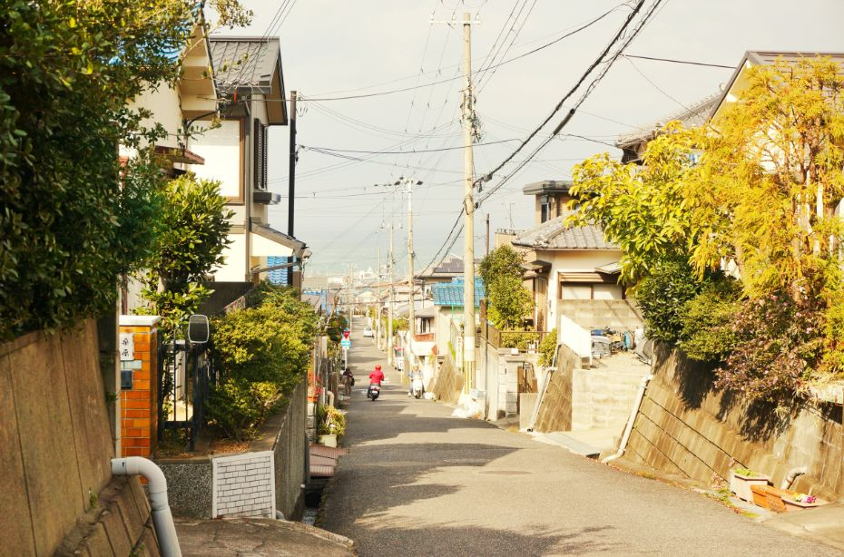听说神奈川三蒲海岸的早樱已经开了，武汉的樱花呢？
我和家人在汉口经营一家小店，并不怎么赚钱，这次它的命运就更模糊了。但现在也只能走一步看一步，急忙赶回去我又能做什么？只会添麻烦。我觉得武汉人很强，总会想办法，去创造条件解决困难，我能做的，就是开工之后再卯起劲来跑。
明知国内开往武汉的火车都停运了，我还是每天都会在去哪儿网上搜火车票，没想到自己这么独立的人，现在也会这么想家。
“希望元宵节之前回家”，我在回国包机意向表的时间栏上写下了这句话。
原文链接 备份链接 前言 2003年的非典，我在武汉读书，每天两点一线地简单生活，虽然也看看新闻报道，但那时的网络并不发达，信息量很少，武汉感染的人也很少，所以真的没有什么感觉。 2020年的肺炎疫情，爆发在我生活了将近20年的武汉——这 …
原文链接 备份链接 《战疫口述记》，是燃财经在新型冠状病毒肺炎期间推出的特别栏目，记录疫情亲历者的观察和感受。本文为第6篇，查看前5篇请点击《我和公司都快熬不住了》《节后返京，太太太南了》《我的“流浪”春节》《农村这样防肺炎》《我在武汉 …
原文链接 备份链接 【财新网】（记者 贾天琼）2月1日13:31，南方航空CZ30001航班执行包机从广州出发前往泰国普吉岛接滞留当地的湖北籍旅客，返回航班CZ30002将从普吉岛直飞武汉。 截至发稿，民航已部署5个航班，共接送湖北籍 …
原文链接 备份链接 28.01.2020本文字数：3781，阅读时长大约7分钟 导读：无法回家的湖北人在各个群里诉说自己的遭遇，也开始抱团取暖。 作者 | 第一财经 林春挺 2020年1月24日，农历除夕，张嘉佳在自己的微信朋友圈上这样 …
原文链接 备份链接 新型肺炎疫情持续发酵，已致武汉封城。网络上的信息铺天盖地，仍无法解开我们的疑问。疫情真相为何？疫区实际情况是怎样？目前身在武汉的单读作者晓宇，讲述了他的所见所感。 瘟疫进行时 撰文：晓宇 一月十七日，我去车站接朋友。 …